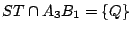

| |
上面所討論的是六點共在一二次曲線上的坐標代數條件式。很自然地我們還應該研討六點共在一二次曲線的幾何條件究竟是什麼？這也就是著名的 Pascal定理。Blaise Pascal (1623-1662)
英年早逝，他在少年時代曾著有一本圓錐截線的小冊子，可惜當年印份極少，很早就連孤本也找不到了。但是 Leibniz 說他早年曾經拜讀過，還記得其中有下述這個美妙的定理，即在一個圓錐截線 Γ 上任取六點
{A1,A2,A3; B1,B2,B3}，如 [圖 8-11] 所示，令
 ,
, ,
,
 ，則恆有 {P,Q,R} 三點共線。 ，則恆有 {P,Q,R} 三點共線。
[ 圖 8-11 ]
但是 Leibniz 說他已經不記得 Pascal 在書中所給的証明了，所以我們現在只能從
Pascal 當代的幾何認知環境來作一種合情合理的探討與推測。
早在紀元三世紀末，Pappus 的幾何著作中即已出現下述命題，即如 [圖 8-12] 所示，設
{A1,A2,A3},
{ B1,B2,B3} 是分別在  和 和  上的三點組。令
,
,
，則 {P,Q,R} 三點共線。
上的三點組。令
,
,
，則 {P,Q,R} 三點共線。
[ 圖 8-12 ]
可惜這樣美妙的命題乃是僅僅以一個習題形式出現而並沒有在書中給以論証，顯然 Pappus 和當代的幾何學家們是知道如何証明上述命題的。他們當時究竟是怎麼証的呢？卻又是一個有待探討與推測的「証法考古題」。
現在讓我們先來探討 Pappus 定理的古証理當如何。由于這個命題是以習題形式出現，我們相信它是能夠以當年熟知的幾何定理推導出來的。回顧當年有關的幾何定理，其中就只有 Menelous 逆定理是以
「三點共線」為其結論者，所以我們可以想到當年大概是要運用 Menelous
逆定理來証明 Pappus 定理。我們先重溫 Menelous
定理和其逆定理（詳見第二章例題）：
【Menelous定理和逆定理】：設直線 與
 三邊所在之直線 AB, BC, CA
分別相交于 P,Q,R 相異三點，則下述有向長度比之乘積恆等于 -1： 三邊所在之直線 AB, BC, CA
分別相交于 P,Q,R 相異三點，則下述有向長度比之乘積恆等于 -1：
反之，若相異三點 P,Q,R 分別在
三邊
AB, BC, CA 之上並滿足上面有向長度比的條件式，則 P,Q,R 三點共線。
[ 圖 8-13 ]
現在讓我們運用 Menelous 定理和逆定理來証明 Pappus 定理。
就命題的圖形所給的八條直線，我們可以就地取材，選取其中三條分別過
P, Q, R 者來構成一個三角形，然後再對于其餘五條直線運用 Menelous 定理。如 [圖 8-14] 所示，我們選取了
A1B3, A2B1, A3B2 來構成
 。 。
[ 圖 8-14 ]
對 A1B2 運用 Menelous 定理：
因
,
,
，
所以：
對 A2B3 運用 Menelous 定理：
因
,
,
，
所以：
對 A3B1 運用 Menelous 定理：
因
,
,
，
所以：
對 運用 Menelous 定理（然後顛倒）：
因
,
,
，
所以：
對 運用 Menelous 定理（然後顛倒）：
因
,
,
，所以：
現將上面所得的五條等式相乘起來，便會發現有很多項能夠互相抵消，最後便可得出下面等式：
運用 Menelous 逆定理，即知 P, Q, R 三點共線，Pappus 定理証畢。
接著讓我們來探討 Pascal 當年的証明究竟有那種合情合理的可能性。首先，他當然熟知
Pappus 定理，而且也知道對于 Pappus 定理的上述証法。再者，他所要証明者，其實就是 Pappus 定理在非蛻化錐線的推廣。如
[圖 8-15] 所示，Σ,
分別是圓錐 Γ 和兩個平面 Π,  的截線，而且 是一個圓。令
{A1',A2',A3'; B1',B2',B3'} 是 上的相應六點使得
{O,Ai,Ai'} 和
{O,Bi,Bi'} 皆為共線三點組。 的截線，而且 是一個圓。令
{A1',A2',A3'; B1',B2',B3'} 是 上的相應六點使得
{O,Ai,Ai'} 和
{O,Bi,Bi'} 皆為共線三點組。
[ 圖 8-15 ]
令
,
,
。不難看到
{O,P,P'}, {O,Q,Q'}, {O,R,R'} 也都是共線三點組。所以
{P',Q',R'} 三點共線的充要條件乃是 {P,Q,R} 三點共線。由此可以想到，Pascal 當年想要証明者，其實可以歸于圓的情形去加以証明的。換句話說，只要能夠把它對圓的「特殊情形」 加以証明，則「一般情形」的証明就可以運用上述透視對應加以推論而得！按照 Pascal 當代的幾何認知來判斷，上面這種運用圓錐截線「與生俱來」的透視對應把 Pascal 定理的証明歸于圓的情形加以論証的想法是相當自然的。總之，只要有了這個想法，就自然會同樣地去構造在 Pappus 定理的古証中那個分別含有 P',Q',R' 于其三邊之上的那個三角形，如 [圖 8-16] 所示的
。
[ 圖 8-16 ]
把 Pappus 定理中所用的 [圖 8-16] 和 [圖 8-14] 相比較，其差別是前者除
的三邊之外尚有五條直線而後者則尚有三條直線和一個圓。我們當然可以先對這三條直線運用 Menelous 定理，即得
相乘之後再重組，其所得為
把上式和 Menelous 逆定理中的條件相比，上式左側多了一個
在此，自然會想到應該運用圓的幾何性質去証明它恆等于 1 。其實，如 [圖 8-17] 所示，由圓周角相等易見
[ 圖 8-17 ]
 和
相似，所以
。同理即得 和
相似，所以
。同理即得
這樣就可以証得 P',Q',R' 三點共線，再用透視對應即可証得 P,Q,R 三點也共線。由上面這一段分析和探討來看，我們相信 Pascal 當年的証法，大致應該如此。
[註]：（一）Pascal 定理不但提供了六點共在一錐線的充要條件的幾何表述，而且也提供了描繪那個五點所定的錐線的點線作圖法。
[ 圖 8-18 ]
（二）錐線的幾何本質乃是圓的透視投影。由此可見，關于圓的任何一個在「透視投影之下保持不變」的幾何性質，當然也是任給錐線所共有的幾何性質。上述 Pascal 定理只是其中之一，當然它是其中極為重要的錐線特徵性質；其他各種各樣的錐線的透視投影不變的共性，都可以用它來加以推導。
（三）Pappus 定理當年在 Pappus 的著作中，僅僅以習題形式出現，究其原因，大概是當代的幾何學家們認為它只是一個美妙的命題而已；它在「當時」的幾何體系中，並沒有基本的重要性。其實 Pappus 定理的深刻蘊涵，一直到了十九世紀後半在射影幾何學的研討中，才展現出它的基本重要性。它乃是整個射影幾何的基本定理
(fundamental theorem of projective geometry) 。
|
|
|